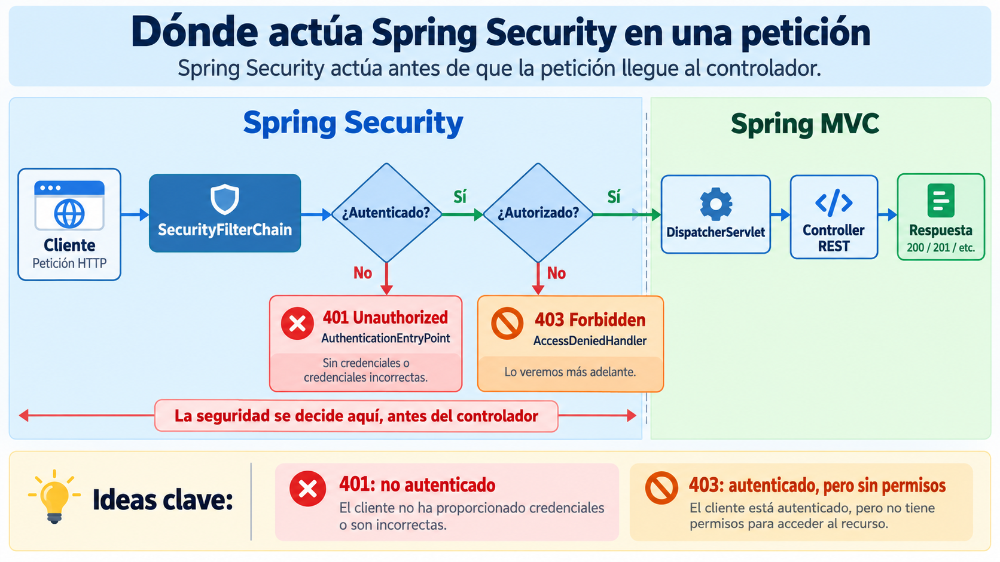
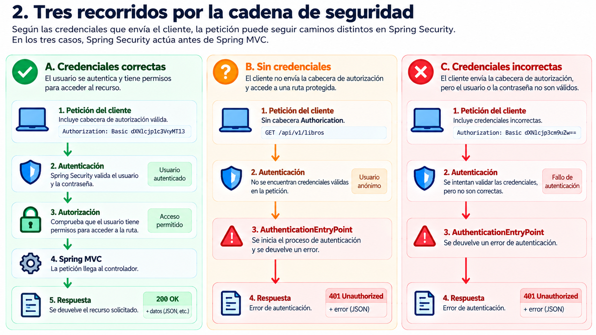
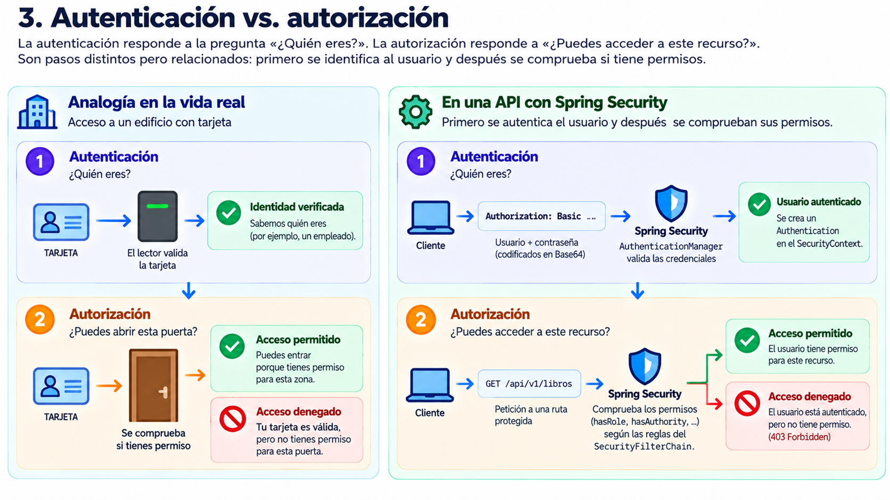
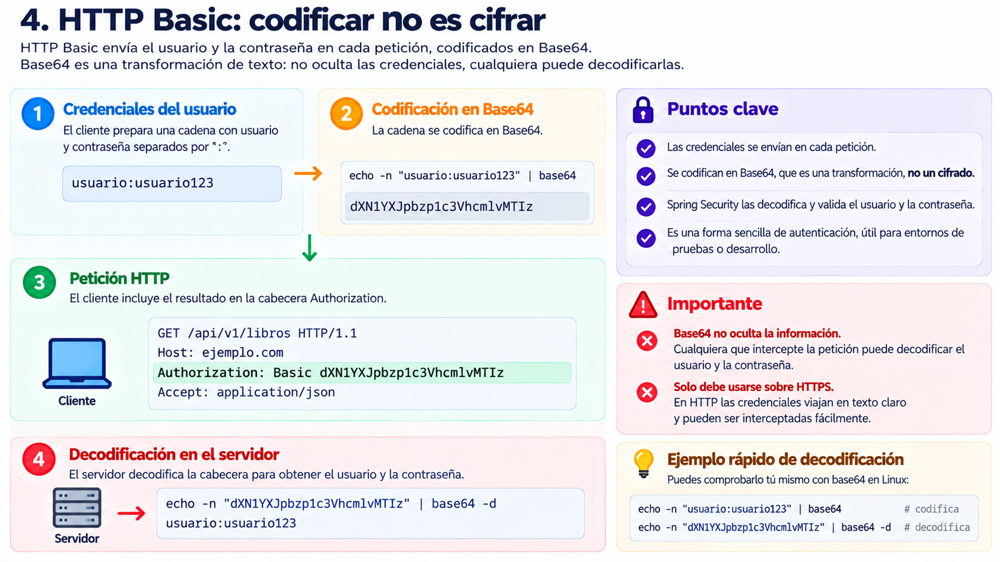
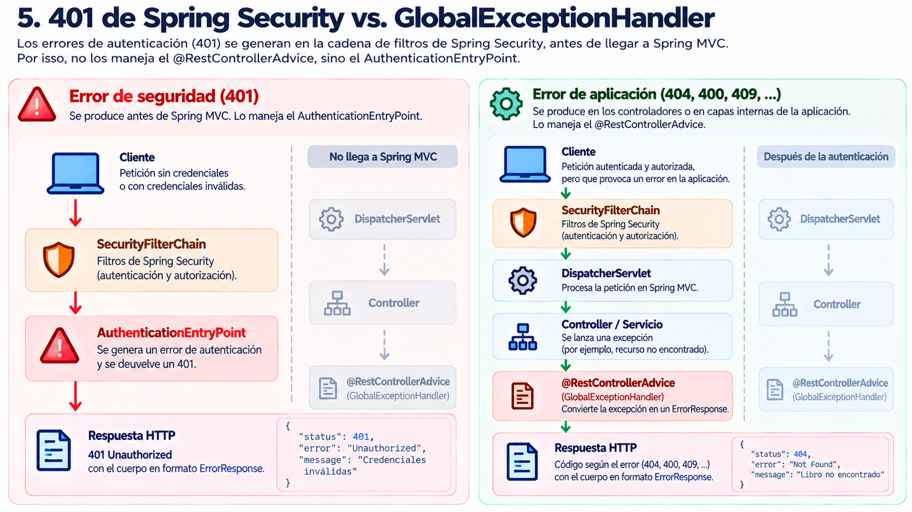

🧩 2. Seguridad básica: usuarios en memoria y HTTP Basic¶
Descarga de diapositivas
¿Por qué empezar por algo que vas a sustituir?
Lo que ves en este apartado —usuarios en memoria y HTTP Basic— no es la versión final. Es un estado intermedio deliberado: sus limitaciones explican por qué después necesitaremos usuarios persistidos, contraseñas protegidas con BCrypt y autenticación mediante JWT.
El recorrido será: usuarios en memoria + HTTP Basic → PostgreSQL + BCrypt → JWT. Cada paso resuelve un problema concreto del anterior.
🔒 Lo primero que hace Spring Security: cerrarlo todo¶
Spring Security es el framework de seguridad del ecosistema Spring. Se encarga de comprobar quién realiza cada petición y qué tiene permiso para hacer, en lugar de obligarte a repetir esa lógica en cada controller.
Si añades spring-boot-starter-security al pom.xml de una API que hasta ese momento era pública y reinicias sin escribir ninguna configuración propia, el comportamiento cambia inmediatamente. Por ejemplo:
| Bash | |
|---|---|
Antes podía devolver un 200 OK. Con Spring Security presente, pasa a responder 401 Unauthorized y añade una cabecera como:
| Text Only | |
|---|---|
Spring Security aplica por defecto una política muy restrictiva: si no se indica expresamente qué puede quedar abierto, exige autenticación. Es la mínima exposición llevada a la práctica.
Esto ocurre porque Spring Security inserta una cadena de filtros delante de Spring MVC. Esos filtros inspeccionan cada petición antes de que alcance el DispatcherServlet y deciden si puede continuar.

Figura 1. Spring Security intercepta la petición antes de que llegue al DispatcherServlet y al controller. Elaboración propia.
La consecuencia principal es sencilla: una petición puede ser rechazada por seguridad sin que ningún controller llegue a ejecutarse.
🚦 Tres recorridos por la cadena de seguridad¶
El resultado visible puede ser parecido —por ejemplo, dos peticiones distintas pueden acabar en 401—, pero el camino interno no siempre es el mismo.

Figura 2. Una petición puede continuar hasta Spring MVC o terminar en 401 por recorridos distintos según las credenciales enviadas. Elaboración propia.
1. Credenciales correctas¶
Con una cabecera Authorization válida, BasicAuthenticationFilter extrae las credenciales y el AuthenticationManager coordina su comprobación. Para localizar al usuario utiliza un UserDetailsService.
Si la autenticación es correcta y la ruta permite el acceso, la petición llega al DispatcherServlet, que resuelve el método del controller correspondiente.
| Text Only | |
|---|---|
2. Sin cabecera Authorization¶
Si la petición no trae credenciales, no existe nada que validar. La petición continúa como usuario anónimo hasta que la autorización detecta que está intentando acceder a una ruta protegida.
Spring Security activa entonces el AuthenticationEntryPoint y devuelve un 401 Unauthorized. Ni el controller ni el GlobalExceptionHandler llegan a intervenir.
3. Credenciales incorrectas¶
Aquí sí existen credenciales y se intenta autenticarlas. El AuthenticationManager consulta al UserDetailsService, pero el usuario no existe o la contraseña no coincide.
El resultado vuelve a ser un 401 Unauthorized, aunque el recorrido interno ha sido distinto al caso anterior.
El 403 pertenece a otro problema
Un 401 significa que la petición no está autenticada correctamente. Un 403 Forbidden aparece cuando Spring Security sí sabe quién eres, pero esa identidad no tiene permiso para realizar la operación solicitada. La gestión completa del 403 se trabajará más adelante en el tema.
🎭 Autenticación vs. autorización¶
Son dos preguntas distintas y conviene separarlas desde el principio.

Figura 3. La autenticación comprueba la identidad; la autorización decide qué puede hacer esa identidad. Elaboración propia.
| Pregunta | Ejemplo | |
|---|---|---|
| Autenticación | ¿Quién eres? | Comprobar que usuario y contraseña son válidos. |
| Autorización | ¿Puedes hacer esto? | Comprobar si el usuario puede borrar un libro. |
La analogía de una tarjeta de acceso ayuda a distinguirlas: primero el lector verifica que la tarjeta identifica a una persona válida; después, cada puerta comprueba si esa persona tiene permiso para abrirla.
En Spring Security también son responsabilidades separadas. El mecanismo de autenticación puede ser HTTP Basic, JWT u otro distinto, mientras que authorizeHttpRequests(...) define las reglas que determinan qué puede hacer el usuario ya identificado.
📦 HTTP Basic: codificar no es cifrar¶
HTTP Basic es uno de los mecanismos de autenticación más sencillos de HTTP. El cliente construye una cadena con usuario y contraseña separados por : y la codifica en Base64.

Figura 4. HTTP Basic codifica usuario:contraseña en Base64 y lo envía en cada petición; Base64 no cifra las credenciales. Elaboración propia.
Por ejemplo:
La cabecera enviada es:
| Text Only | |
|---|---|
Puedes comprobar que la transformación es reversible sin ninguna clave:
| Bash | |
|---|---|
Resultado:
| Text Only | |
|---|---|
Base64 NO es cifrado
Base64 solo representa bytes como texto. Cualquiera que intercepte la cabecera puede recuperar el usuario y la contraseña.
Por eso HTTP Basic solo debe utilizarse sobre HTTPS. Sin cifrado en el transporte, las credenciales viajan prácticamente en claro y, además, se repiten en cada petición.
🧑🤝🧑 Usuarios en memoria y una primera política de rutas¶
Para comprender el mecanismo sin introducir todavía persistencia, Spring Security permite declarar usuarios directamente en memoria mediante InMemoryUserDetailsManager.
InMemoryUserDetailsManager implementa UserDetailsService: cuando Spring Security necesita localizar un usuario, consulta este almacén en memoria.
El prefijo {noop} indica que la contraseña está almacenada en texto claro y debe compararse sin aplicar ningún PasswordEncoder. Es válido como demostración, pero precisamente constituye una de las limitaciones que resolveremos en la siguiente sesión.
.roles("USER") termina siendo ROLE_USER
Spring Security añade automáticamente el prefijo ROLE_. Por eso .roles("USER") registra internamente ROLE_USER, y .roles("ADMIN") registra ROLE_ADMIN.
Con los usuarios definidos, podemos establecer una primera política de acceso:
Léela de arriba abajo:
| Pieza | Qué significa |
|---|---|
.requestMatchers(HttpMethod.GET, "/api/v1/libros/**") |
Selecciona los GET del catálogo de libros y sus subrutas. |
.permitAll() |
Permite esas peticiones incluso sin autenticación. |
.anyRequest() |
Representa cualquier petición que no haya coincidido antes. |
.authenticated() |
Exige un usuario válido, sin comprobar todavía un rol concreto. |
.csrf(AbstractHttpConfigurer::disable) |
Desactiva CSRF para esta API y este mecanismo de credenciales. |
.httpBasic(Customizer.withDefaults()) |
Activa HTTP Basic como mecanismo de autenticación. |
El orden de las reglas importa
Spring Security evalúa las reglas de authorizeHttpRequests de arriba abajo y aplica la primera que encaja. Si .anyRequest().authenticated() apareciera antes de la regla pública de /api/v1/libros/**, esa regla posterior no llegaría a utilizarse.
Por tanto, las reglas concretas deben aparecer antes que las generales.
Por qué desactivamos CSRF aquí
Sin .csrf(AbstractHttpConfigurer::disable), una petición POST, PUT o DELETE puede ser rechazada con 403 Forbidden por el CsrfFilter, incluso aunque las credenciales HTTP Basic sean válidas.
CSRF resulta especialmente importante cuando el navegador adjunta automáticamente las credenciales, como ocurre con cookies de sesión. En esta API el cliente envía explícitamente la cabecera Authorization y no estamos utilizando autenticación basada en cookies, por lo que lo desactivamos para simplificar este escenario.
Esto no significa que CSRF deba desactivarse en cualquier API REST: la decisión depende de cómo se transporten las credenciales.
Esta política sigue siendo provisional: los GET del catálogo son públicos y el resto exige simplemente estar autenticado. Más adelante construiremos una matriz de rutas completa con permisos por rol.
🩹 Cerrando la grieta: AuthenticationEntryPoint¶
En la sesión anterior construiste un GlobalExceptionHandler para que los errores de la aplicación utilizaran siempre el mismo ErrorResponse. Sin embargo, un 401 producido por Spring Security no pasa por ese handler.

Figura 5. Los errores de autenticación se producen antes de Spring MVC y necesitan un AuthenticationEntryPoint; las excepciones de la aplicación sí pueden pasar por @RestControllerAdvice. Elaboración propia.
La razón es arquitectónica: el fallo de autenticación ocurre dentro de la cadena de filtros, antes de que la petición llegue al DispatcherServlet. Por tanto, añadir otro @ExceptionHandler no resolvería el problema: Spring MVC nunca llega a recibir esa petición.
Spring Security dispone de una pieza específica: AuthenticationEntryPoint. Su método commence(...) se ejecuta cuando una petición no autenticada intenta acceder a un recurso protegido.
Aquí no devolvemos un ResponseEntity<ErrorResponse> porque no estamos dentro del circuito normal de Spring MVC. Trabajamos directamente con HttpServletResponse y utilizamos JsonMapper para convertir manualmente ErrorResponse a JSON.
No necesitas memorizar esta clase
Lo importante es entender por qué existe. Los detalles de commence(...), HttpServletResponse y JsonMapper son mecánicos y se adaptan de forma muy parecida entre proyectos.
Falta registrar esta pieza en la configuración:
exceptionHandling(...) está separado de httpBasic(...). Esa decisión es útil porque el formato del 401 no depende necesariamente del mecanismo concreto de autenticación. Cuando HTTP Basic sea sustituido por JWT, el AuthenticationEntryPoint podrá seguir registrado en el mismo lugar.
El 403 tiene la misma grieta
Un usuario correctamente autenticado pero sin permisos recibe un 403 Forbidden. Ese error también se genera en Spring Security, fuera de GlobalExceptionHandler.
La pieza equivalente es AccessDeniedHandler. La construiremos más adelante, cuando completemos la política de autorización.
⚠️ Las limitaciones de esta versión — a propósito¶
La solución actual funciona, pero tiene dos problemas importantes que hemos introducido deliberadamente:
- Usuarios definidos en código y sin persistencia.
useryadminse reconstruyen cada vez que arranca la aplicación, sus contraseñas aparecen en el código y cualquier cambio se pierde al reiniciar. - Las credenciales completas viajan en cada petición. HTTP Basic vuelve a enviar usuario y contraseña continuamente, simplemente codificados en Base64.
Cada problema conduce al siguiente paso del tema:
En el próximo apartado resolveremos el primero: los usuarios pasarán a PostgreSQL y las contraseñas dejarán de almacenarse en texto claro.
✅ Ideas clave¶
Abrir resumen
- Spring Security inserta una cadena de filtros antes de Spring MVC y, por defecto, protege todas las rutas.
- Autenticación responde a “¿quién eres?”; autorización responde a “¿puedes hacer esto?”.
- Dos peticiones pueden acabar en
401por caminos distintos: no enviar credenciales y enviar credenciales incorrectas no son el mismo caso interno. - HTTP Basic envía
usuario:contraseñaen Base64 en cada petición. Base64 codifica, no cifra, por lo que Basic solo debe utilizarse sobre HTTPS. InMemoryUserDetailsManagerpermite declarar usuarios de forma sencilla, pero es un almacén provisional y las contraseñas con{noop}permanecen en texto claro.- Las reglas de
authorizeHttpRequestsse evalúan de arriba abajo: las más concretas deben ir antes queanyRequest(). - En esta API desactivamos CSRF porque las credenciales se envían explícitamente en
Authorizationy no usamos autenticación basada en cookies. - Los errores
401de Spring Security se producen antes delDispatcherServlet, por lo que no los capturaGlobalExceptionHandler. AuthenticationEntryPointpermite dar a esos401el mismo formatoErrorResponseque al resto de la API.- Este estado es deliberadamente provisional: la siguiente sesión sustituirá los usuarios en memoria por PostgreSQL + BCrypt y, después, JWT sustituirá a HTTP Basic.